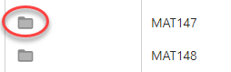

Data toevoegen
U kunt data toevoegen (registeren en uploaden) in de ZyLAB Information Management Add-on.
Wees u ervan bewust dat u mogelijk niet alle features kunt uitvoeren. Dat hangt af van de aan u toegewezen rechten. Voor meer informatie, zie Gebruikers en Rollen.
Instructies
-
Navigeer naar het startscherm, de home page van de Add-on.
Tip: Maak deze link uw favoriet als dat nog niet gedaan is.
- Als u meerdere archieven online heeft staan, selecteer dan eerst het gewenste archief.

- Het Records Overzichtscherm verschijnt.
Via deze pagina kunt u documenten registreren en uploaden.
- Start een registratie plus upload:

- Maak een keuze uit een recordsjabloon (documenttype, bijvoorbeeld Contract) en een archiveermethode (web upload of scan), voeg de juiste bestanden toe en klik op Registreer.
Let op: Als u archiveert/upload vanuit Outlook of vanuit gekozen bestanden, dan start direct de dialoog (stap 5) op.
- Vul, in de dialoog die dan verschijnt, eventuele velden (metadata) in, zoals afdeling, dossier, advocaat (deze velden zijn afhankelijk van het gekozen recordsjabloon). Klik op Registreer.
- Na registratie van nieuwe documenten, verwerkt ZyLAB ONE deze op inhoudelijke doorzoekbaarheid. Na enige tijd zijn ze doorzoekbaar en vindbaar.